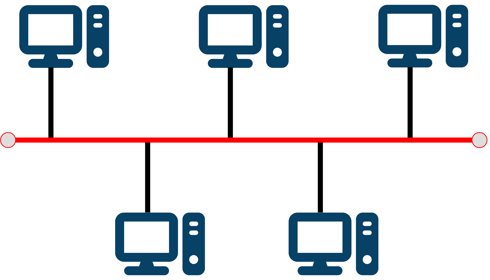
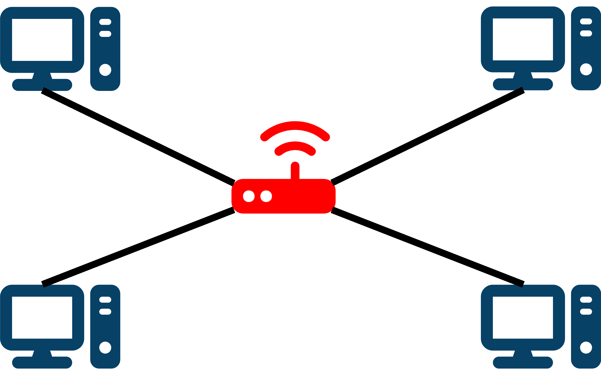

GCSE Link: 5.03 - Network Topologies
At GCSE, we learned about the bus and star topologies. The diagrams are shown below.
Diagram 1 shows a bus topology.
 Diagram 1
Diagram 1

Diagram 2 shows a star topology.
 Diagram 2
Diagram 2

However, at A Level we now learn that each network has two topologies.
 The physical topology of a network refers to how the devices are connected.
The physical topology of a network refers to how the devices are connected.
 The logical topology of a network refers to how data moves around the network.
The logical topology of a network refers to how data moves around the network.
A network which is wired as a physical star topology (with a central switch) can behave logically as a bus topology, because inside the switch all devices share a single central bus. The switch can direct data to specific devices on the network, but can only handle one transmission at once.
 What are the advantages and disadvantages of using a bus topology instead of a star topology?
What are the advantages and disadvantages of using a bus topology instead of a star topology?
Advantages:
• Bus topology networks use less cable than star topology networks
• The whole network fails if the central switch in a star topology network fails (single point of failure)
• Bus topologies can be easier and cheaper to install than star topologies
Disadvantages:
• There are more data collisions on bus topology networks than on star topology networks
• Data transmission is usually slower on bus topology networks
• Bus topology networks are less secure because the data can be seen by all devices